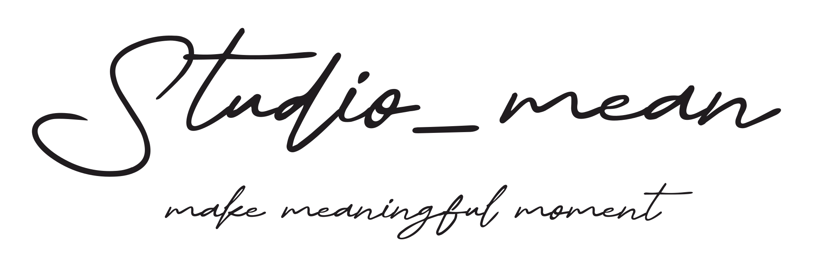

개인 촬영
프로필, 가족사진, 개인의 이야기
개인과 가족을 위한 촬영에서는 표정, 자세, 호흡, 분위기를 우선으로 둡니다. 과한 연출보다 오래 남는 인상을 만드는 방향으로 진행합니다.

Studio mean · 소개
Studio mean은 프랑크푸르트 근교 오버우어젤을 기반으로 개인 프로필, 가족사진, 웨딩, 기업행사와 브랜드 콘텐츠를 촬영합니다. 낯선 독일 현장도 한국어로 충분히 상의하고, 현장 조건에 맞춰 차분하게 진행합니다.
개인 촬영
개인과 가족을 위한 촬영에서는 표정, 자세, 호흡, 분위기를 우선으로 둡니다. 과한 연출보다 오래 남는 인상을 만드는 방향으로 진행합니다.
기업 촬영
독일 현지 기업행사, 컨퍼런스, 팀 촬영, 임원 프로필, 인터뷰, 브랜드용 이미지와 짧은 영상 제작까지 연결할 수 있습니다. 일정이 복잡한 현장에서도 필요한 장면을 놓치지 않도록 사전에 정리합니다.
한국 기업 지원
독일 전시회, 본사 방문, 유럽 로드쇼, 지사 행사, 팀 촬영처럼 한국어 커뮤니케이션이 필요한 프로젝트를 현지에서 바로 정리하고 진행할 수 있습니다.
사진 + 영상
스틸 사진뿐 아니라 인터뷰, 짧은 클립, 행사 기록 영상, 브랜드용 영상까지 같은 톤으로 제작할 수 있어 기업이나 팀 단위 프로젝트에 특히 유리합니다.